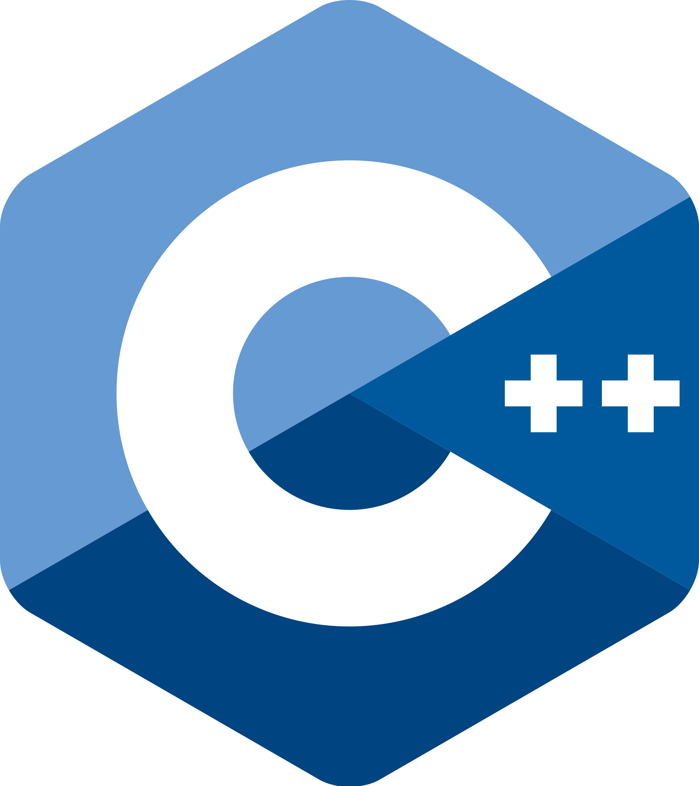

Matthew Senick
Data Practitioner. Econometrician. Writer.
Senior Analytics Engineer, Sigma Computing
M. Economics, University of Toronto
B. Computer Science & Economics, University of Saskatchewan
Now
- Building data products at Sigma Computing
- Writing about analytics engineering & causal inference
About Me
~ whoami
role : Senior Analytics Engineer, Sigma Computing
background : M. Economics (Toronto) · B.CS & Economics (USask)
industries : software, aerospace, finance, academia
focus : causal inference, analytics engineering, ML
~ interests
writing : Substack · Medium
research : quasiexperimental methods, NLP, big data
speaking : analytics conferences & meetups
